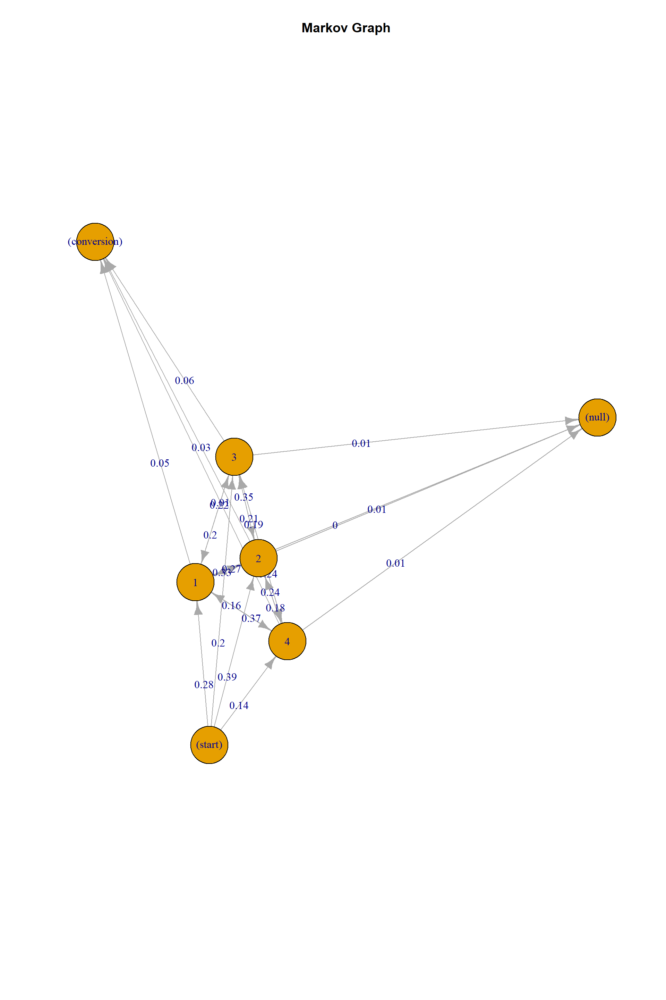
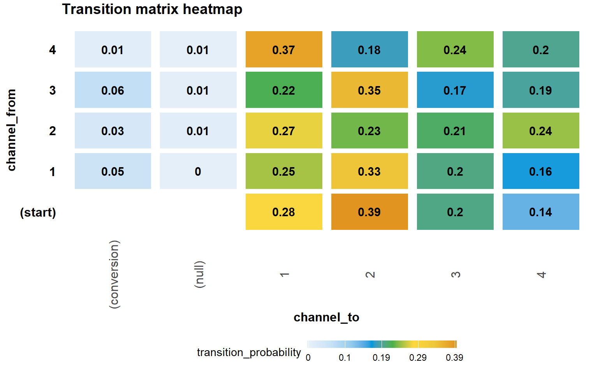
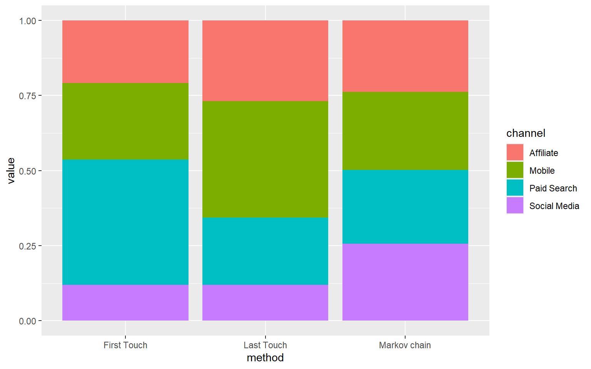

| x |
|---|
| mobile>paid_search>paid_search>paid_search>affiliate>mobile>paid_search>paid_search>social_media>mobile>social_media>paid_search>social_media>mobile>affiliate>paid_search>paid_search>paid_search>social_media>>>>>>>>>>>>>>>>>>>>>>>>> |
| paid_search>mobile>mobile>paid_search>affiliate>paid_search>mobile>paid_search>mobile>mobile>paid_search>affiliate>affiliate>affiliate>affiliate>paid_search>affiliate>paid_search>mobile>affiliate>affiliate>paid_search>affiliate>>>>>>>>>>>>>>>>>>>>> |
| social_media>social_media>mobile>affiliate>social_media>paid_search>mobile>mobile>affiliate>>>>>>>>>mobile>affiliate>>>>>>>>>>>>>>>>>>>>>>>>> |
| mobile>affiliate>mobile>social_media>affiliate>mobile>social_media>mobile>>>>>>>>>>mobile>>>>>>>>>>>>>>>>>>>>>>>>>> |
| paid_search>paid_search>affiliate>paid_search>mobile>paid_search>paid_search>affiliate>mobile>affiliate>paid_search>affiliate>affiliate>affiliate>affiliate>paid_search>mobile>affiliate>mobile>affiliate>mobile>mobile>paid_search>>>>>>>>>>>>>>>>>>>>> |
Attribution Modelling Case Study
attribution
A fictional marketing attribution case study for KNC that analyzes multi-channel performance and compares heuristic vs. data-driven models to guide smarter budget allocation.
1 Case study: KNC
“Let’s show a bird’s eye view of our digital channel performance from this year, first. Here we could have a bar chart on number of online purchases and some advertising data ¬on mobile, paid search, affiliations, and social media activities. And some correlations here as well… What do you think?,” said Levi.
“Perhaps, Prisha will ask about the overall improvement compared to last year, right? So, let’s add the same figures from last year and make a comparison here too,” responded Emma.
Levi and Emma, the marketing science team members at KNC–a European firm that sells trendy and quality make-up and skincare products at affordable prices for students and young professionals– sat round a modern-look, high gloss conference table to discuss what to include in their presentation deck prior to their meeting with Prisha, the chief marketing officer (CMO) of KNC.
“I am sure that during the meeting, she will ask about each channel’s contribution to final purchases. This is quite critical for next year’s budget request. How about drilling down to the individual level data and running some attribution models?,” said Levi.
Emma nodded in agreement and said “We can show the results from the ‘first-touch’ and ‘last-touch’ heuristics, and let her decide which model to use for budget-related decisions. Most brands use the ‘last-touch’ model, anyway.”
After a long day at work, Levi and Emma agreed on what to cover in their presentation for the CMO: an overview of digital channel performance and some detailed results from attribution modelling.
Meeting with the CMO
Prisha interrupted the presentation and said “I am a little bit puzzled here, Emma. It is hard to believe that social media channel has lower impact on consumer purchases than affiliates. Most of our targeted consumers are young adults who spend considerable time on social networks. These results are not convincing enough.”
Pointing to the below title of an online article from her laptop screen, Prisha continued: “Look at this”.
“Google won’t use the last-click attribution as the default conversion model. I am not sure what exactly they mean by data modelling but they seem to be right in ditching the last-touch model. It is very clear that assigning full credit for a sale to the last digital touchpoint in consumer’s path to purchase may mislead us.”
Meanwhile, as a recently graduated marketing analyst, Levi opens his laptop, digs up his analytics course content and rediscovers that there are other approaches to attribution modelling.
Inspired by his class materials, Levi responded to Prisha:
“Well, we can use more advanced models – for example Markov chain models– to get a better picture of attribution across all these digital touchpoints. Also, we can use Shapley value-based modelling approach to quantify the effect of a channel removal. What would happen if we turn off a channel? Perhaps, by turning off a particular channel we do not lose much on conversion rates…”
“Excellent suggestions,” said Prisha. “My gut feeling is telling me that the model should assign different weights to all the channels on the customer journey. Why don’t you start right now? I will discuss our digital marketing budget with the board next week. So, we need to be quick on this.”
The R application below will help us address the following questions on the KNC case study:
Taking a path-to-purchase view, which customer touchpoint1 contributes more or less to conversion?
Should KNC give up on paid search and put more effort into mobile marketing?
Which attribution modeling approach should the KNC marketing analysts, Levi and Emma, adopt in the future?
2 2 Preparation and set-up
Install and load R packages
Once the packages are installed to our computer, we should load them to R.
Next, we will load the dataset.
Consumer path-to-purchase data
The dataset of this case study is available on the website of the book. The file is named ‘knc_attribution’, and stored in a csv format. We run the following code chunk to load the dataset to R.
Looking at the dataset attribution from the upper right corner of the R Studio screen, we see that we are given 105 unique online consumer journeys, of which 89 turned into conversion. This corresponds to 85% of conversion rate. Note that this conversion rate is quite high. We typically observe such high conversion rates around heavy promotional times.
The below table provides information on the variables of the dataset and their descriptions.
| Variable | Description |
|---|---|
| users_id | Unique user ID |
| channeln | Online advertising (i.e., mobile, paid search, affiliate, and social media) exposure path, with channel1 referring to the first exposure, channel2 the second, …, channeln the nth (maximum number of exposure = 45). |
| user_purchase | Consumer final conversion indicator, which takes value of 1 if a specific consumer made purchase (i.e., converted) at the end of her path, and 0 otherwise. |
| null_purchase | The opposite of ‘user_purchase’, taking value of 1 if there is no purchase and 0 otherwise. |
After getting a glimpse of the data, we can start running the attribution models.
3 3 Markov chain approach
3.1 Data preparation
To estimate a Markov chain model, we use the ‘ChannelAttribution’ package in R.
We start by knitting consumer advertising exposures into a desired ‘sequenced path’ format for the analysis.The below code generates ‘conversion sequences’ for all consumers.
If we take a look at the dataset again, we see that there is a new variable created, called cleaned_path.
Now let’s look at the paths of first five consumers in our dataset:
We can already observe some heterogeneity across consumers in terms of:
starting touchpoint (i.e., first-touch)
ending touchpoint before (non)conversion (i.e., last-touch), and
composition and length of paths.
For model estimation, we decide to take the first 80 consumers in the dataset as our training set and keep the remaining 25 observations for the test set. The below code chunk splits the data into training and test sets.
As a final preparatory step, we need to create a ‘channel stack’, through which we summarize consumer paths and calculate the total number of conversions (frequency)and non-conversions for each path pattern. The following code chunk will help us generate that channel stack:
| cleaned_path | conversion | non_conversion |
|---|---|---|
| affiliate>mobile>affiliate>social_media>social_media>mobile>mobile>mobile>mobile>>>>>>>>>mobile>mobile>>>>>>>>>>>>>>>>>>>>>>>>> | 1 | 0 |
| affiliate>paid_search>affiliate>paid_search>affiliate>affiliate>affiliate>affiliate>affiliate>mobile>affiliate>paid_search>paid_search>mobile>paid_search>paid_search>affiliate>affiliate>affiliate>paid_search>affiliate>mobile>affiliate>paid_search>affiliate>mobile>affiliate>affiliate>paid_search>paid_search>paid_search>mobile>affiliate>affiliate>affiliate>affiliate>paid_search>affiliate>paid_search>affiliate>affiliate>>> | 1 | 0 |
| affiliate>paid_search>affiliate>paid_search>mobile>mobile>paid_search>paid_search>mobile>affiliate>affiliate>paid_search>mobile>paid_search>affiliate>mobile>paid_search>paid_search>mobile>paid_search>affiliate>paid_search>affiliate>social_media>paid_search>mobile>paid_search>affiliate>mobile>affiliate>affiliate>mobile>affiliate>mobile>paid_search>mobile>mobile>mobile>paid_search>affiliate>affiliate>mobile>affiliate>paid_search>mobile | 1 | 0 |
| affiliate>paid_search>affiliate>paid_search>social_media>mobile>social_media>paid_search>social_media>affiliate>social_media>paid_search>mobile>paid_search>social_media>mobile>paid_search>paid_search>social_media>paid_search>affiliate>paid_search>social_media>social_media>social_media>mobile>paid_search>social_media>mobile>affiliate>affiliate>mobile>affiliate>mobile>paid_search>social_media>mobile>mobile>paid_search>affiliate>social_media>mobile>social_media>social_media>mobile | 4 | 0 |
| affiliate>paid_search>affiliate>social_media>social_media>mobile>mobile>paid_search>mobile>>>>>>>>>paid_search>mobile>>>>>>>>>>>>>>>>>>>>>>>>> | 2 | 2 |
| affiliate>paid_search>paid_search>mobile>affiliate>social_media>mobile>paid_search>social_media>mobile>paid_search>mobile>mobile>affiliate>social_media>paid_search>mobile>paid_search>social_media>affiliate>affiliate>mobile>mobile>paid_search>paid_search>paid_search>social_media>mobile>mobile>mobile>mobile>>>>>>>>>>>>> | 5 | 0 |
| mobile>affiliate>mobile>social_media>affiliate>mobile>social_media>mobile>>>>>>>>>>mobile>>>>>>>>>>>>>>>>>>>>>>>>>> | 2 | 0 |
| mobile>mobile>affiliate>paid_search>affiliate>mobile>affiliate>paid_search>paid_search>mobile>>>>>>>>paid_search>paid_search>>>>>>>>>>>>>>>>>>>>>>>>> | 1 | 0 |
| mobile>mobile>social_media>social_media>affiliate>affiliate>paid_search>mobile>social_media>affiliate>affiliate>mobile>paid_search>mobile>social_media>social_media>social_media>mobile>social_media>paid_search>mobile>affiliate>paid_search>mobile>mobile>mobile>paid_search>affiliate>mobile>mobile>paid_search>affiliate>social_media>mobile>mobile>affiliate>paid_search>affiliate>mobile>>>>> | 5 | 0 |
| mobile>paid_search>affiliate>paid_search>mobile>mobile>affiliate>paid_search>paid_search>mobile>>>>>>>>paid_search>paid_search>>>>>>>>>>>>>>>>>>>>>>>>> | 0 | 1 |
Now we are ready to estimate the Markov chain model with the cleaned version of our data.
3.2 Markov chain modelling
To estimate the Markov chain model, we use the markov_model function. Specifically, we estimate a third-order Markov model so that the ‘memory’ of the chain goes back to the most recent three states. Our assumption here is that consumer journeys typically cannot be restricted to the most recent state, i.e., consumers have a longer memory. Recall that first-order Markov model assumes that the current state is only determined by the previous or the most recent state.
Number of simulations: 100000 - Convergence reached: 0.34% < 5.00%
Percentage of simulated paths that successfully end before maximum number of steps (44) is reached: 89.52%
[1] "*** Install ChannelAttribution Pro for free running install_pro(). Visit https://channelattribution.io for more info. Set flg_pro=FALSE to hide this message."| channel | total_conversions | percent |
|---|---|---|
| affiliate | 16 | 0.242 |
| mobile | 17 | 0.258 |
| social_media | 16 | 0.237 |
| paid_search | 18 | 0.263 |
The results based on Markov chain model tells us quite a different story compared to what the KNC analysts found using the last-touch heuristic.
Markov chain model informs us that:
The effectiveness of four touchpoints in driving conversions do not differ dramatically from each other.
Both social media advertising and affiliate advertising contribute around 24% to conversion while both paid search and mobile channels contribute around 26%.
To further make sense of what we have found, we can obtain the transition probabilities between all states through the following codes:
[1] "*** Install ChannelAttribution Pro for free running install_pro(). Visit https://channelattribution.io for more info. Set flg_pro=FALSE to hide this message."To summarize the transition matrix of third-order Markov model, we obtain the transition probabilities to conversion state using the three-channel paths.
For example, we can see that consumers with the last three channel exposures Social Media > Paid Search > Affiliate has the highest conversion probability (p=0.455).
We can imagine that such a path might highly describe a teenage consumer behaviour online. They are attracted by fancy social network advertising on Instagram or Facebook. Then, they click on paid search advertising to get further information about the product.Later, they get further enticed by repeatedly browsing on affiliate websites, and finally decide to purchase the latest beauty product of KNC.
Question: Considering the Markov transition matrix and path-to-conversion table above, can you try to infer why we have such a different conclusion about social media and affiliate channel contributions based on Markov chain and last-touch modelling approaches?
3.3 Visualisation
Markov graph
A Markov graph helps us further understand the paths that consumers in our dataset have taken towards conversion and non-conversion. We could plot Markov graph for the third-order Markov chain model that we just estimated. However, due to complexity in visual representation of the third-order model, here we obtain a graph of the first-order Markov chain model to illustrate how to interpret such graphs from Markov chain models.
Running the code chunks below gets us a nice-looking Markov graph.
[1] "*** Install ChannelAttribution Pro for free running install_pro(). Visit https://channelattribution.io for more info. Set flg_pro=FALSE to hide this message."
On the Markov graph above:
Nodes 1, 2, 3, and 4 refer to mobile, paid search, affiliate, and social media advertising, respectively.
Nodes ‘conversion’ and ‘null’ refer to conversion and non-conversion, respectively.
Node ‘start’ represents a starting point of all paths, as is requested by the plotting package that we use.
Arrows point from the ‘departing’ node (i.e., channel) to the ‘arriving’ node (i.e., (n-1)th channel).
The numeric value along an arrow pointing from node to node is the transition probability of a customer first getting exposed to channel and then to channel .
Looking at the graph, the probability of purchase for a consumer with a simple path of ‘start > paid_search > conversion’ is , 0.41*0.03 =0.0123 since the transition probability from start to paid search is 0.41, and that from paid search to conversion is 0.03.
Transition heatmap
We may also want to create a heatmap for the transition matrix of our estimated Markov model using the following codes. Note that this map is also created based on first-order markov model results (trans_1st), since graphical representation of the third-order Markov transition heatmap is too densed and difficult to read.

In the transition matrix heatmap, the rows represent the ‘starting point’ and the columns represent the ‘ending point’ of each one-step transition.From this heatmap, we can reach the same conclusions as with the Markov graph.
Note that there are no rows representing conversion or null states on the matrix because in our setting there are no paths starting from a conversion or starting from a non-conversion. That is also why the cells referring to the transition from start to conversion and null are empty.
4 4 Model comparison
We would like to see the difference in outcomes of the traditional heuristic approaches (i.e., first-touch, last-touch) and the model-based approach (i.e., Markov chain).
We first use heuristic_models function to quickly obtain results for the heuristic models:
[1] "*** Install ChannelAttribution Pro for free! Run install_pro(). Set flg_pro=FALSE to hide this message."| channel_name | first_touch | last_touch | linear_touch |
|---|---|---|---|
| affiliate | 14 | 23 | 14.80225 |
| mobile | 17 | 24 | 19.23514 |
| social_media | 8 | 4 | 14.13698 |
| paid_search | 28 | 16 | 18.82563 |
Note that the output of heuristic_function also includes the linear touch model. As explained previously in the chapter, linear (even-split) touch model is a simple heuristic model that assumes that each channel contributes to final conversion equally. We do not focus on this specific model in this chapter as it is not of interest to KNC.
Now we summarize model results of all three models into one table:
| Item | First_Touch | Last_Touch | Markov_Chain |
|---|---|---|---|
| Mobile | 0.254 | 0.388 | 0.260 |
| Paid Search | 0.418 | 0.224 | 0.245 |
| Affiliate | 0.209 | 0.269 | 0.238 |
| Social Media | 0.119 | 0.119 | 0.257 |
The table above suggests that one can get to very different conclusions by adopting first-touch, last-touch, and Markov chain approach, respectively. Such difference is even clearer if we contrast model results by plotting a bar chart:

While first-touch model guides KNC to invest more in paid search and less in social media, last-touch model would suggest strong influence of mobile advertising. Finally, Markov graph approach suggests that the contribution made by all four touchpoints are actually quite evenly distributed.
Which model should KNC choose?
There are two options available for KNC when deciding which model to choose:
KNC should try to make sense of these results, first. Prisha can combine the model-based evidence with her managerial intuition. Given her concerns about the touch-based models, Prisha is advised to make her next budget allocation decisions based on Markov chain model output. At the end of the campaign period, she can assess whether there is a significant improvement in conversion rates.
Alternative approach would be to assess the predictive power of attribution models by using a larger dataset. Research on attribution models demonstrate that Markov chain models provide a fairer allocation of weights to channels and perform better than heuristic (e.g., first-touch and last-touch) methods in predicting conversion rates because they take into account the interplay across touchpoints and sequentiality in a customer journey (Anders et al. 2016).In appendix, we illustrate how predictive performance of these models can be assessed using the current dataset. In our illustration, Markov model performs better than heuristic methods. However, we take those results with a grain of salt because some paths to purchase occur only a few times in the test set, which may make conversion probabilities less reliable.
What if a particular touchpoint is removed?
What would have happened to conversion rate when a particular channel was removed from path-to-purchase? To address this question, we will use Shapley value-based approach.
5 5 Shapley value-based approach
This modelling approach allows us to evaluate the relative importance of a customer touchpoint to conversion.
Using mobile marketing as an example, we will calculate the drop in conversion probability. The scale of the drop will be the importance of mobile marketing in converting customers. Specifically, we will calculate the following:
We do the same for each of the four touchpoints in the dataset.
The below code chunk searches if each of the paths contains mobile, paid search, affiliate, and social media or not. Then, it generates four indicator variables.
Next, we compute the Shapley values for each customer touchpoint and convert them to percentage terms.
[1] 0.01064426[1] 0.01064426[1] 0.003479853[1] 0.008095238[1] 0.3238919[1] 0.3238919[1] 0.1058878[1] 0.2463284The output from the Shapley model suggests that the impact of mobile and paid search advertising is the largest because they are associated with the largest drop in conversion percentage, followed by social media, and then affiliate. Thus, removing mobile and paid search channels would not be an appropriate action for KNC. Our further advice to Prisha is that she needs to evaluate the strategic implications of a channel removal very carefully with a forward-looking perspective because consumers may be pushed to other touchpoints (e.g.paid search), which may result in a higher cost to KNC. Finally, conclusions from Shapley model are not causal. To understand the causal impact of a channel removal, randomized field experiments should be adopted, in which consumers are randomly assigned to control and treatment groups.
6 6 Conclusion
Overall, the marketing group at KNC seems to be rather confident of the following decisions to make:
KNC should analyze and predict consumer conversion by switching from first- and last-touch heuristic approaches to Markov chain model.
Instead of downgrading their emphasis on affiliate and social media advertising, KNC should keep investing in all of the customer touchpoints.
KNC can use the Shapley value-based modelling approach to quantify the potential impact of a channel removal on consumers’ purchases. However, removal of a channel (e.g., social media) may result in significant changes in the customer journey. Consumers may be pushed to other touchpoints (e.g.paid search) that might be more costly to the firm. Therefore, findings from Shapley model should always be combined with a careful strategic analysis. For instance, even though the model finds zero contribution for the social media channel, the manager may still want to be present on social media to increase the brand awareness in the market.
These results do not imply causality. To understand the causal impact of a touchpoint on the relevant performance metrics, KNC is suggested to run randomized field experiments.